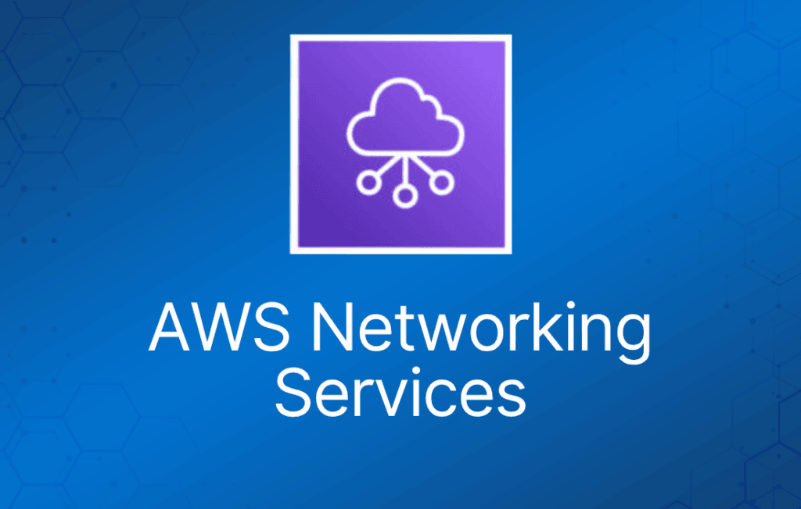
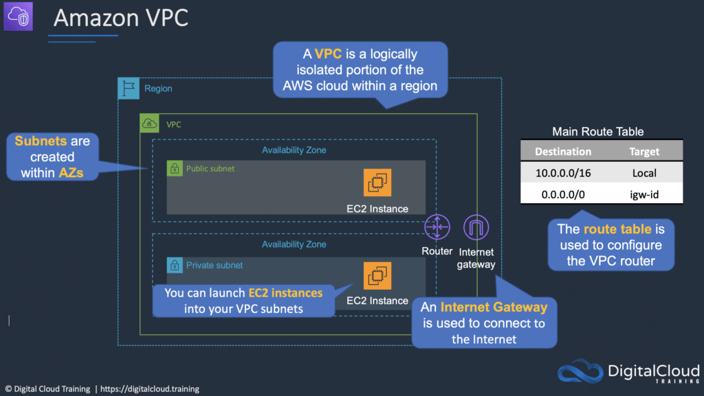
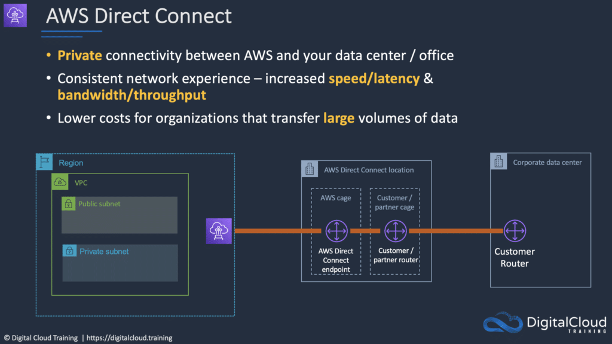

本文介绍 AWS 网络服务，这是 Cloud Practitioner 考试大纲中的一个关键技术领域。
Amazon Virtual Private Cloud (VPC)
Virtual Private Cloud (VPC) 是专属于你的 AWS 账户的虚拟网络。
类似于在 AWS 内部拥有自己的数据中心。
它在逻辑上与 AWS 云中的其他虚拟网络隔离。
提供对虚拟网络环境的完全控制，包括 IP 范围的选择、子网的创建以及路由表和网关的配置。
你可以将 AWS 资源（如 Amazon EC2 实例）启动到你的 VPC 中。
创建 VPC 时，必须以无类别域间路由（CIDR）块的形式为 VPC 指定 IPv4 地址范围，例如 10.0.0.0/16。
这是 VPC 的主 CIDR 块。
VPC 横跨该区域中的所有可用区（AZ）。
你可以完全控制谁可以访问 VPC 内的 AWS 资源。
你可以创建自己的 IP 地址范围，并创建子网、路由表和网络网关。
首次创建 AWS 账户时，每个 AWS 区域都会为你创建一个默认 VPC。
默认 VPC 在每个区域创建，每个 AZ 中都有一个子网。
默认情况下，每个区域最多可创建 5 个 VPC。

你可以为 VPC 定义专用租户（dedicated tenancy），以确保实例启动在专用硬件上（覆盖启动时指定的配置）。
首次预置 Amazon EC2 资源时，会为每个 AWS 账户自动创建默认 VPC。
默认 VPC 的子网全部是公有子网。
公有子网具有以下特征的子网：
- “Auto-assign public IPv4 address” 设置为 “Yes”。
- 子网路由表关联了 Internet Gateway。
默认 VPC 中的实例始终同时拥有公有和私有 IP 地址。
AZ 名称对不同用户映射到不同的物理区域（例如，AZ “ap-southeast-2a” 对不同用户可能映射到不同的物理区域）。
VPC 的组件：
- Virtual Private Cloud：AWS 云中逻辑隔离的虚拟网络。你从你选择的范围中定义 VPC 的 IP 地址空间。
- 子网（Subnet）：VPC IP 地址范围的一个分段，你可以在其中放置成组的隔离资源（映射到一个 AZ，1:1）。
- Internet Gateway：Amazon VPC 侧连接公共互联网的组件。
- NAT Gateway：一种高可用的托管网络地址转换（NAT）服务，供私有子网中的资源访问互联网。
- 硬件 VPN 连接：你的 Amazon VPC 与数据中心、家庭网络或托管机房之间基于硬件的 VPN 连接。
- Virtual Private Gateway：VPN 连接的 Amazon VPC 侧。
- Customer Gateway：VPN 连接的你这一侧。
- 路由器（Router）：路由器互连各个子网，并在 Internet Gateway、Virtual Private Gateway、NAT Gateway 和子网之间引导流量。
- 对等连接（Peering Connection）：对等连接让你能够通过私有 IP 地址在两个对等 VPC 之间路由流量。
- VPC 端点（VPC Endpoints）：从 VPC 内部私密连接托管在 AWS 上的服务，无需使用 Internet Gateway、VPN、NAT 设备或防火墙代理。
- 仅出站 Internet Gateway（Egress-only Internet Gateway）：一种有状态网关，为从 VPC 到互联网的 IPv6 流量提供仅出站访问。
安全连接 VPC 的选项：
- AWS 托管 VPN——设置快速。
- Direct Connect——高带宽、低延迟，但需要数周到数月才能建立。
- VPN CloudHub——用于将多个站点连接到 AWS。
- 软件 VPN——使用第三方软件。
弹性网络接口（ENI）是代表网卡（NIC）的逻辑网络组件。
ENI 可以从 EC2 实例上附加和分离，ENI 的配置会保留。
流日志（Flow Logs）捕获进出 VPC 中网络接口的 IP 流量信息。
流日志数据使用 Amazon CloudWatch Logs 存储。
流日志可以在以下级别创建：
- VPC。
- 子网。
- 网络接口。
可以与不同区域的 VPC 建立对等连接（目前大多数区域都支持）。
子网（Subnets）
创建 VPC 后，你可以在每个可用区中添加一个或多个子网。
创建子网时，你需要指定子网的 CIDR 块，它是 VPC CIDR 块的子集。
每个子网必须完全位于一个可用区内，不能跨可用区。
子网类型：
- 如果子网的流量路由到 internet gateway，则该子网称为公有子网（public subnet）。
- 如果子网没有到 internet gateway 的路由，则该子网称为私有子网（private subnet）。
- 如果子网没有到 internet gateway 的路由，但流量路由到用于 VPN 连接的 virtual private gateway，则该子网称为仅 VPN 子网（VPN-only subnet）。
Internet Gateway 是一种水平扩展、冗余且高可用的 VPC 组件，允许 VPC 中的实例与互联网之间通信。
防火墙
网络访问控制列表（Network ACL）在子网级别提供防火墙/安全层。
安全组（Security Group）在实例级别提供防火墙/安全层。
下表描述了 Security Group 和 Network ACL 之间的一些区别：
| Security Group | Network ACL |
| 在实例（接口）级别起作用 | 在子网级别起作用 |
| 仅支持允许规则 | 支持允许和拒绝规则 |
| 有状态（Stateful） | 无状态（Stateless） |
| 评估所有规则 | 按顺序处理规则 |
| 仅在与组关联时应用于实例 | 自动应用于所关联子网中的所有实例 |
VPC 向导
VPC 向导可用于创建以下四种配置：
带单个公有子网的 VPC：
- 你的实例运行在 AWS 云的私有隔离区域中，可直接访问互联网。
- 可以使用网络 ACL 和安全组对实例的入站和出站网络流量进行严格控制。
- 创建一个 /16 网络和一个 /24 子网。公有子网实例使用 Elastic IP 或公有 IP 访问互联网。
带公有和私有子网的 VPC：
- 除了公有子网外，此配置还添加了一个私有子网，其中的实例无法从互联网寻址。
- 私有子网中的实例可以通过公有子网使用网络地址转换（NAT）建立到互联网的出站连接。
- 创建一个 /16 网络和两个 /24 子网。
- 公有子网实例使用 Elastic IP 访问互联网。
- 私有子网实例通过网络地址转换（NAT）访问互联网。
带公有和私有子网及硬件 VPN 访问的 VPC：
- 此配置在 Amazon VPC 与数据中心之间添加 IPsec 虚拟专用网络（VPN）连接——实际上将数据中心扩展到了云端，同时为 Amazon VPC 中的公有子网实例提供直接的互联网访问。
- 创建一个 /16 网络和两个 /24 子网。
- 一个子网直接连接互联网，另一个子网通过 IPsec VPN 隧道连接到你的企业网络。
仅带私有子网及硬件 VPN 访问的 VPC：
- 你的实例运行在 AWS 云的私有隔离区域中，私有子网中的实例无法从互联网寻址。
- 你可以通过 IPsec 虚拟专用网络（VPN）隧道将此私有子网连接到你的企业数据中心。
- 创建一个 /16 网络和一个 /24 子网，并在 Amazon VPC 与企业网络之间预置 IPsec VPN 隧道。
NAT 实例
NAT 实例由你自己管理。
用于让私有子网实例访问互联网。
创建 NAT 实例时，务必禁用实例上的源/目标检查（source/destination check）。
NAT 实例必须位于单个公有子网中。
NAT 实例需要分配到安全组。
NAT Gateway
NAT Gateway 由 AWS 为你管理。
NAT Gateway 在其部署的每个 AZ 中都是高可用的。
企业更偏好使用它。
可自动扩展至 45Gbps。
无需打补丁。
不关联任何安全组。
下表描述了 NAT 实例和 NAT Gateway 之间的一些区别：
| NAT 实例 | NAT Gateway |
| 由你管理（例如软件更新） | 由 AWS 管理 |
| 手动纵向扩展（实例类型）并使用增强网络 | 弹性扩展至 45 Gbps |
| 无高可用——可通过多个子网中的多个 NAT 实现脚本化/自动扩展的高可用 | 在一个 AZ 内自动提供高可用，并可部署在多个 AZ 中 |
| 需要分配安全组 | 无安全组 |
| 可用作堡垒机（bastion host） | 无法通过 SSH 访问 |
AWS Direct Connect (DX)
AWS Direct Connect 是一项网络服务，提供了使用互联网将客户本地站点连接到 AWS 之外的另一种选择。
数据通过 AWS 与客户数据中心或企业网络之间的私有网络连接传输。
Direct Connect 的优势：
- 大流量场景下降低成本。
- 提高可靠性（性能可预测）。
- 提高带宽（带宽可预测）。
- 降低延迟。
每个 AWS Direct Connect 连接可以配置一个或多个虚拟接口（VIF）。
公有 VIF 允许访问公共服务，如 S3、EC2 和 DynamoDB。
私有 VIF 允许访问你的 VPC。
通过 Direct Connect 可以连接到该区域内的所有 AZ。
你可以通过公有 VIF 建立到远程区域的 IPSec 连接。
Direct Connect 按端口小时数和数据传输量计费。
提供 1Gbps 和 10Gbps 规格。
50Mbps、100Mbps、200Mbps、300Mbps、400Mbps 和 500Mbps 的速率可以通过 AWS Direct Connect 合作伙伴购买。
每个连接由客户路由器端口与 Amazon 路由器之间的单条专用连接组成。
要实现高可用，必须有 2 条 DX 连接——可以是主动/主动或主动/备用。
路由表需要更新以指向 Direct Connect 连接。

AWS Global Accelerator
AWS Global Accelerator 是一项为拥有本地或全球用户的应用程序提高可用性和性能的服务。
它提供静态 IP 地址，作为单个或多个 AWS 区域中应用程序端点（如 Application Load Balancer、Network Load Balancer 或 EC2 实例）的固定入口点。
利用 AWS 全球网络优化用户到应用程序的路径，改善 TCP 和 UDP 流量的性能。
AWS Global Accelerator 持续监控应用程序端点的健康状况，能检测到不健康的端点，并在不到 1 分钟内将流量重定向到健康端点。
细节与优势
使用不同网络区域（A 和 B）中的冗余（两个）静态 anycast IP 地址。
这对冗余地址在全球广播。
使用 AWS 边缘站点——地址同时从多个边缘站点宣告。
地址关联到区域性 AWS 资源或端点。
AWS Global Accelerator 的 IP 地址充当应用程序的前端接口。
智能流量分配：将连接路由到离应用程序最近的接入点。
目标可以是 Amazon EC2 实例或 Elastic Load Balancer（ALB 和 NLB）。
使用静态 IP 地址，当你修改或替换端点时，无需进行任何面向客户端的更改或更新 DNS 记录。
只要加速器存在，地址就会一直分配给你的加速器，即使你禁用加速器、它不再接受或路由流量。
AWS Outposts
AWS Outposts 是一项完全托管的服务，将相同的 AWS 基础设施、AWS 服务、API 和工具延伸到几乎任何数据中心、托管机房或本地设施，实现真正一致的混合云体验。
AWS Outposts 非常适合需要对本地系统低延迟访问、本地数据处理、数据驻留以及迁移具有本地系统相互依赖关系的应用程序的工作负载。
AWS 计算、存储、数据库和其他服务在 Outposts 上本地运行，你可以使用熟悉的 AWS 服务和工具访问该区域中提供的全部 AWS 服务，构建、管理和扩展本地应用程序。
Outposts 以 42U 机架形式提供，可从 1 个机架扩展到 96 个机架，形成计算和存储容量池。
可以在 AWS Outposts 上运行的服务包括：
- Amazon EC2。
- Amazon EBS。
- Amazon S3。
- Amazon VPC。
- Amazon ECS/EKS。
- Amazon RDS。
- Amazon EMR。